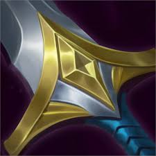
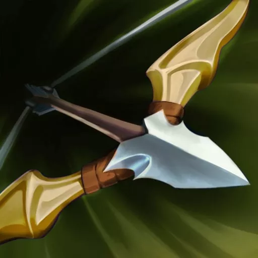
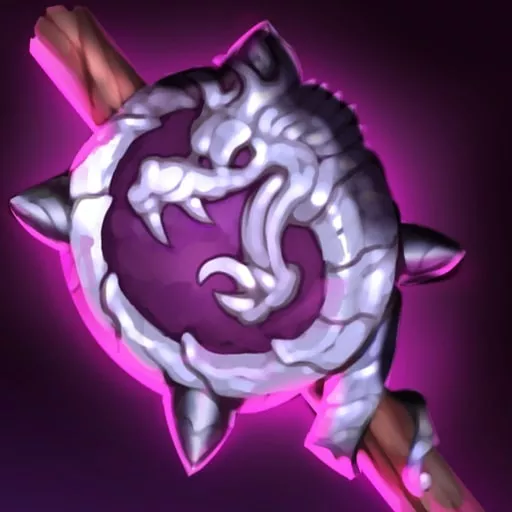
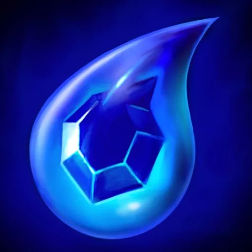
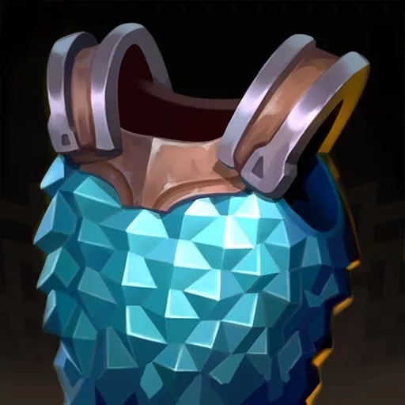
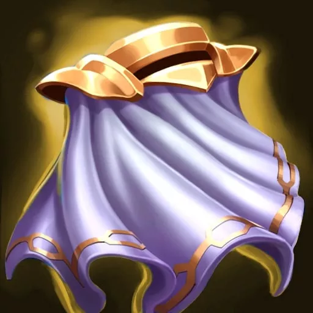
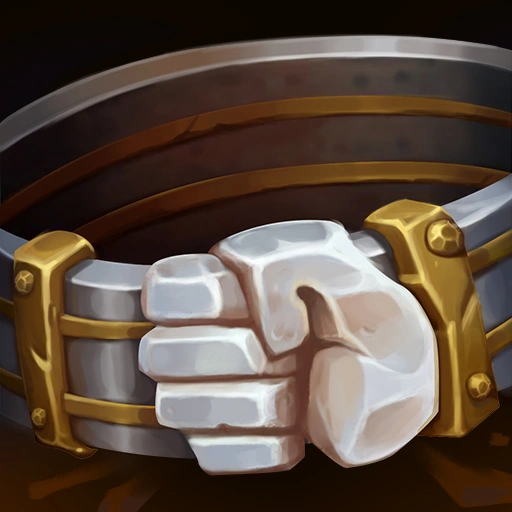
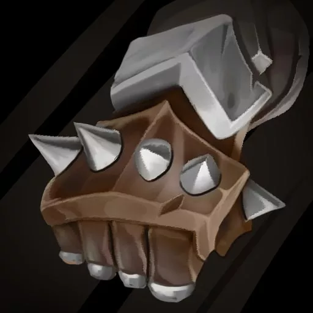

Ryzealautochess
เว็ปนี้เป็นเว็ปที่นำเสนอข้อมูลตัวละคร และ คำศัพท์ในการเล่น TFT
เลือกหมวดหมู่ด้านบนเพื่อดูข้อมูลที่ต้องการ
Comp
ชุดทีมแนะนำสำหรับการเล่น TFT:
- Comp 1: Sniper + Vanguard
- Comp 2: emissary + sorcerer
- Comp 3: heimerdinger + sentinel
Item
รายการไอเท็มที่ใช้ใน TFT:
- Infinity Edge: เพิ่ม Critical Damage
- Guinsoo's Rageblade: ตีเร็วขึ้น 5% ซ้อนทับความเร็วการโจมตี
- Blue Buff: ลดคูลดาวน์สกิล
| รูปภาพ | ชื่อไอเท็ม | ส่วนประกอบ | รายละเอียด |
|---|---|---|---|
|  | B.F. Sword | ไม่มี | เพิ่มพลังโจมตี +10 |
|  | Recurve Bow | ไม่มี | เพิ่มความเร็วโจมตี +10% |
|  | Needlessly Large Rod | ไม่มี | เพิ่มพลังความสามารถ +10 |
|  | Tear of the Goddess | ไม่มี | เพิ่มพลังงานเริ่มต้น +15 |
|  | Chain Vest | ไม่มี | เพิ่มเกราะ +20 |
|  | Negatron Cloak | ไม่มี | เพิ่มความต้านทานเวท +20 |
|  | Giant's Belt | ไม่มี | เพิ่มพลังชีวิต +150 |
|  | Sparring Gloves | ไม่มี | เพิ่มโอกาสคริติคอล +10% |
Champions
รายชื่อตัวละครที่แนะนำ:
- viktor: เมจที่มีดาเมจสูงและCCที่ดี
- Sett: แทงค์แนวหน้าแข็งแกร่ง
- warwick: สุดยอดตัวละครที่สามารถพากลับมาชนะได้
ดูข้อมูลตัวละครเพิ่มเติมได้ที่:
ไปยัง Mobalytics TFT ChampionsVocabulary
ศัพท์ที่ใช้บ่อยใน TFT:
- Econ: การบริหารเงินในเกม
- Roll Down: การใช้เงินทั้งหมดเพื่อตามหาตัวละครที่ต้องการ
- Hyper Roll: การหมุนเงินอย่างรวดเร็วเพื่ออัพเกรดตัวละคร